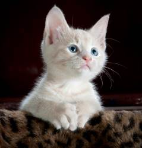

Cats are a small domesticated carnivorous mammal with soft fur, a short snout, and retractable claws. It is widely kept as a pet or for catching mice, and many breeds have been developed.
Home
Cars
Cat Funny Videos
